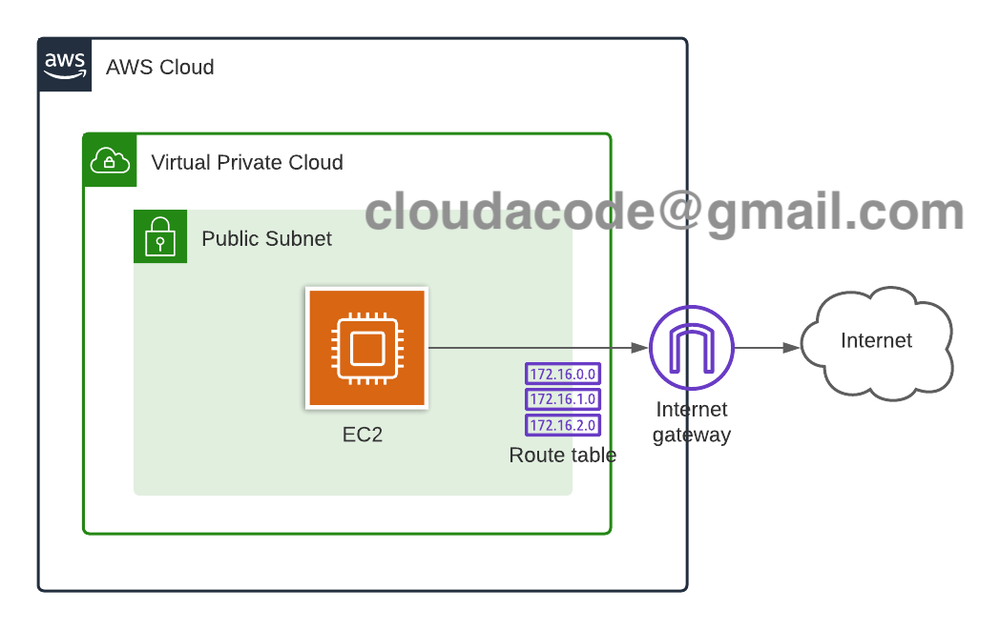
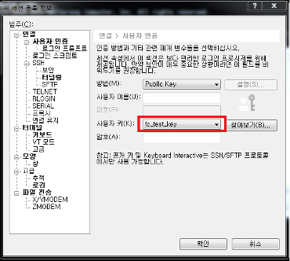
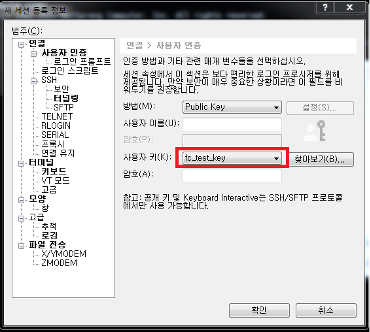

AWS - EC2 구축
AWS 환경 구성 및 EC2 구축
이번 실습은 AWS를 통해 서비스 구성 시 가장 기본이 되는 EC2 구성 실습을 통해서 AWS의 기본 서비스들을 이해 하고 AWS 콘솔 활용 방법을 익히기 위함입니다. EC2로 컴퓨팅 리소스 활용 및 서비스 배포를 위한 기본 작업들을 이해 할 수 있습니다.
Time to Complete: 1-2 hours
Tutorial Prereqs:
- An AWS Account and Administrator-level or PowerUser-level access to it
System Architecture

1. Launch EC2 instance
https://ap-northeast-2.console.aws.amazon.com/ec2/v2/home?region=ap-northeast-2
Choose an Amazon Machine Image(AMI)
Instance 의 OS 이미지를 선택하는 단계 이며 Amazon Linux, CentOS, Ubunt, WindowsOS 등 다양한 OS 이미지를 선택 가능
Amazon Linux 2 AMI (HVM), SSD Volume Type
Chooose an Instance Type
Instance의 CPU, Memory , Network 용량을 선택 하는 단계이며 일반 인스턴트 타입외에 높은 CPU, Memory, IO 타입도 제공
t2.micro
Instance Details
Instance가 배포되는 네트워크 환경 VPC, Subnet) 설정
- Number of instances: 한번에 배포할 인스턴스의 개수이며 1로 유지
- Purchasing option: Spot instances를 활용 할건지의 유무, 선택 하지 않음
- Network: Default VPC 선택
- Subnet: No preference
- Auto-assign Public IP: 자동으로 Public IP 할당 유무를 체크 하는 부분 Enable로 선택
- IAM role: EC2 인스턴스에 IAM 역할을 부여해 추후 API/ Secret key를 사용하지 않고 AWS 소스 자원을 관리 하도록 설정 하는 부분
- Tenancy: 추후에 License이슈 혹은 매우 낮은 네트워크 Latency를 위해 특정 Hardware에 Instance를 몰아서 배치할 수 있는 기능, Default(Shared)로 선택
Instance Storage 설정
Instance의 Disk 용량과 추가 Disk를 선택, Root 볼륨 size와 Disk 볼륨의 유무, size를 정하는 부분
기본 8GB로 진행
Add Tags
AWS콘솔에서 Display 되는 Tag 의 값을 지정 하는 부분 이고 Add Tag 텝 클릭 후 값 입력 (*추후 손쉽게 생성한 서버를 찾기 위함이며 기억할 수 있는 이름으로 서버 이름 변경 가능
Key: Name, Value: Web Server
Configure Security Group
SG는 Host 레벨의 방화벽이며 Allow 정책만 가능하며 서비스할 Port 만 허용 혹은 원격 접속을 위한 접근 대역 IP 로만 제한을 통해 보안 수준을 높임
- Secuirty Group Name: test-web-sg
- Type: SSH
- Source: My IP or Anywhere
- Type: HTTP
- Source: My IP or Anywhere
Review Instance Launch
Instance 배포를 위해 지정한 설정값들을 리뷰 하는 단계 이며 서버에 접근을 위한 key 발급을 진행 Launch 클릭후 key pair 생성
Create a new key pair
Download Key Pair 후 안전한 곳에 key 를 저장 재발급 되지 않음
2. Monitor EC2 instance
정상적으로 Instance가 배포 되는지 EC2 Dashboard에서 확인 가능 Status Checks 가 2/2가 되면 정상 배포 완료
3. Access EC2 instance
인스턴스 대쉬보드에서 connect 버튼을 클릭하면 터미널로 접속 가이드라인이 제공
e.g.,
ssh -i <your_key> ec2-user@<EC2_HOSTNAME>
만약 Windows를 사용 하고 있다면 Xshell을 활용
공식 홈페이지에서 다운로드 URL: https://www.netsarang.co.kr/download/main.html
항목: Xshell5 https://www.netsarang.co.kr/download/down_form.html?code=512
- 새로운 세션 생성 및 사용자 인증
 


4. Install httpd on Linux
접근한 Linux에서 apache 설치
sudo yum -y install httpd
sudo systemctl enable httpd
sudo systemctl start httpd
index.html 설정 /var/www/html/index.html
<html><h1>Hello EC2 Server!</h1></html>
브라우져에서 EC2 Public IPv4 address 접속 및 페이지 확인